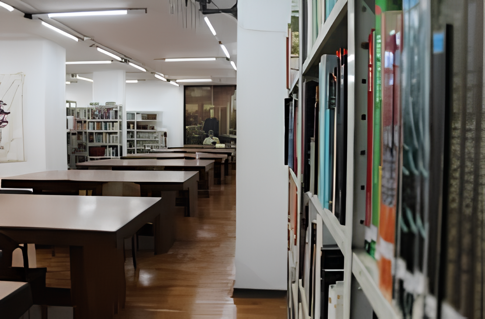

Sobre a Biblioteca Padre Euclides
Uma instituição privada que faz parte da história de Ribeirão Preto, desde 1903.

Um capítulo na história da cidade
A Biblioteca Padre Euclides está intrinsecamente ligada à comunidade. Embora seja uma entidade privada, mantida pela Sociedade Legião Brasileira Civismo e Cultura Ribeirão Preto (SOLEBRARP), ao longo de mais de um século sempre procurou se adaptar às necessidades do município.
Além do acesso gratuito ao livro, dos projetos de incentivo à leitura e da programação cultural mensal, o espaço já serviu como abrigo e hospital improvisado na enchente de 1909, nas revoluções de 1924 e 1930, como quartel-general na Revolução Constitucionalista de 1932 e como sede da PRA-7, primeira rádio de Ribeirão Preto.
De julho de 2010 a dezembro de 2016, foi sede da Oficina Cultural Candido Portinari, equipamento da Secretaria da Cultura do Estado de São Paulo. Desde 2022, conta também com a Gibiteca, com acervo de HQs raros e atividades dedicadas aos quadrinhos.
Linha do tempo
-
1903
Fundação
Padre Euclides Gomes Carneiro funda a SOLEBRARP e o projeto da biblioteca, com acervo inicial doado pelo padre.
-
1909
Enchente
O espaço acolhe a população como abrigo e hospital improvisado durante a tragédia que assolou a cidade.
-
1917
Primeira sede
Inauguração do casarão na R. Visconde de Inhaúma, esquina com São Sebastião, após anos de campanhas e quermesses.
-
1924 a 1932
Revoltas e rádio
Atua em momentos críticos da história local; em 1932 abriga o quartel-general da Revolução Constitucionalista e a rádio PRA-7.
-
1967
Edifício Padre Euclides
Após a demolição do casarão, a biblioteca passa a funcionar no 1º andar do novo prédio, com renda de salas comerciais no 2º andar.
-
2010 a 2016
Oficina Portinari
Sede da Oficina Cultural Candido Portinari, polo estadual de formação e difusão cultural.
-
2022
Gibiteca
Inauguração da Gibiteca com acervo de HQs raros e programação voltada aos quadrinhos.
Sabia que?
A biblioteca é reconhecida de utilidade pública municipal, estadual e federal — um patrimônio vivo no centro de Ribeirão Preto, com mais de 120 anos de portas abertas.